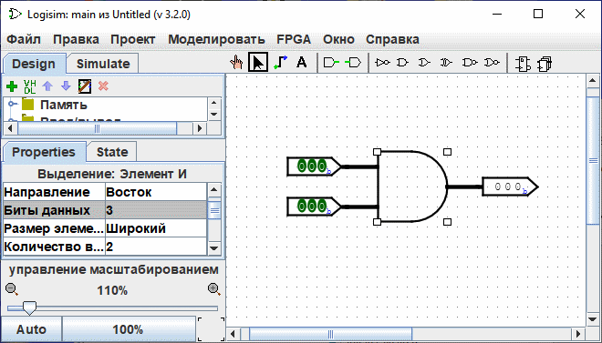
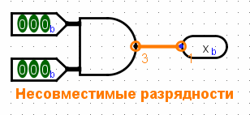

Создание шлейфов
В простых схемах Logisim-evolution большинство проводников являются одноразрядными (передают 1 бит данных). Однако для удобства проектирования можно объединять проводники в группы, называемые шлейфами (или шинами данных). Разрядность такого шлейфа (количество параллельно передаваемых бит) определяется его атрибутом Биты данных.
Каждый вход и выход любого компонента схемы имеет строго определённую разрядность. У многих встроенных компонентов Logisim-evolution есть атрибуты, позволяющие изменять разрядность их входов и выходов.
На рисунке ниже показана простая схема поразрядного логического умножения (И) двух 3-разрядных входов. Обратите внимание, что выходной сигнал также имеет разрядность 3. Все компоненты настроены на работу с 3-разрядными данными. На панели свойств для элемента «И» выбран атрибут Биты данных со значением 3.

Разрядность проводника не задаётся вручную, а вычисляется автоматически на основе разрядности портов компонентов, к которым он подключён. Если проводник соединяет порты разной разрядности, Logisim-evolution зафиксирует ошибку несовместимости («Несовместимые разрядности») и окрасит этот проводник в оранжевый цвет. На примере ниже разрядность выходного контакта изменена на 1, что привело к конфликту:

Проводники, окрашенные в оранжевый цвет из-за несовместимости разрядностей, считаются оборванными и не передают логические значения.
Для одноразрядных проводников текущее состояние легко определить визуально: они окрашиваются в тёмно-зелёный (0) или ярко-зелёный (1) цвет. Многоразрядные шлейфы всегда отображаются чёрным цветом. Тем не менее, вы можете узнать их точное значение во время моделирования, кликнув по проводнику инструментом «Нажатие» ( ).
).

Эта возможность значительно упрощает отладку схем, использующих многоразрядные шины и шлейфы.
Далее: Разветвители.